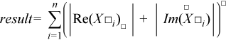

Intel® oneAPI Math Kernel Library Developer Reference - Fortran
Computes the sum of magnitudes of the vector elements.
res = sasum(n, x, incx)
res = scasum(n, x, incx)
res = dasum(n, x, incx)
res = dzasum(n, x, incx)
res = asum(x)
The ?asum routine computes the sum of the magnitudes of elements of a real vector, or the sum of magnitudes of the real and imaginary parts of elements of a complex vector:
res = |Re x1| + |Im x1| + |Re x2| + Im x2|+ ... + |Re xn| + |Im xn|,

where x is a vector with n elements.
INTEGER. Specifies the number of elements in vector x.
REAL for sasum
DOUBLE PRECISION for dasum
COMPLEX for scasum
DOUBLE COMPLEX for dzasum
Array, size at least (1 + (n-1)*abs(incx)).
INTEGER. Specifies the increment for indexing vector x.
REAL for sasum
DOUBLE PRECISION for dasum
REAL for scasum
DOUBLE PRECISION for dzasum
Contains the sum of magnitudes of real and imaginary parts of all elements of the vector.
Routines in Fortran 95 interface have fewer arguments in the calling sequence than their FORTRAN 77 counterparts. For general conventions applied to skip redundant or reconstructible arguments, see BLAS 95 Interface Conventions.
Specific details for the routine asum interface are the following:
Holds the array of size n.